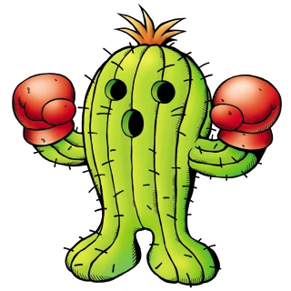
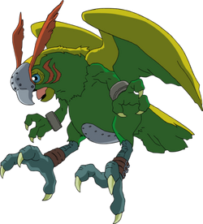
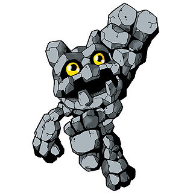
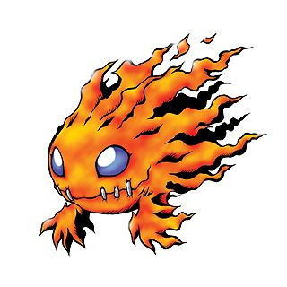
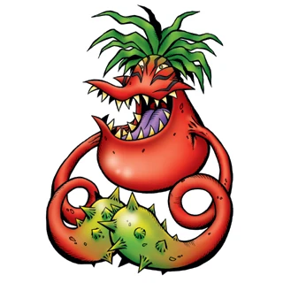
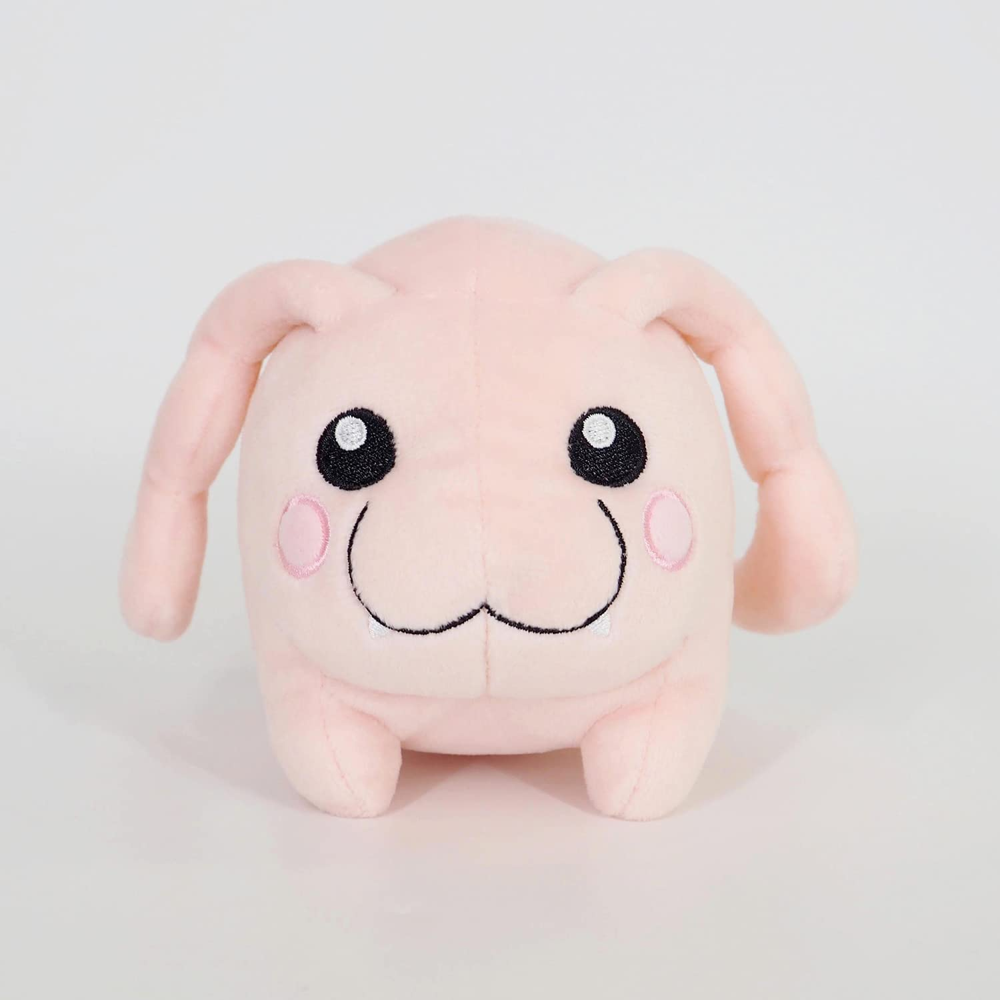

Tan solo cierra los ojos e imagina:Estoy tirado disfrutando del sol durante mis vacaciones en un campamento de verano. De repente las nubes se vuelven negras y comenza a nevar..¡¡En Enero!!¡No entiendo nada!. Y esto es apenas el comienzo. Una extraña sensacion se apodera de mi.No puedo Explicarla.Es como si estuviese siendo disuelto en agua, transformandome en un segundo en..!nada¡ Y entonces...!PAFF¡ Soy lansado con 6 de mis compañeros de campamento a una lejana Isla habitada por centenares de....!Monstruos¡.. Lo se.Probablemente pienses que estoy loco.Me costo mucho creer lo que veia.No vi a mis padres durante varios dias. Lo unico humano que vi fue a mis 6 amigos.Pero te los presentare en un minuto,primero te quiero contar acerca de Digimon. Estaba sentado ahi, en la Isla, y no se de donde aparecio una bola saltarina: Una criatura con orejas puntiagudas y dientes afilados.Lo juro!! Y la pequeña bola me hablo. El pequeño tipo-me parece que es un tipo-me dijo que su nombre era "Koromon". Koromon me explico que era un Digimon, un monstruo digital, y que hyabia venido para ser mi guia y protector en el Digimundo. Me dijo que habia centenares mas como él por ahí, algunos de ellos enormes y feroces. ¿Que se supone que tenia que decir?El tipo era un experto y yo estaba perdido. EL DIGIMUNDO.."¿Que es exactamente el Digimundo?", le pregunté.Koromon me explicó; "La palabra viene de mundo digital. Es el mundo en el que todo, incluso yo, está hecho con material digital". ¿Material digital? Sólo de pensarlo me dolia el cerebro e incluso pensé que estaba dentro de una pelicula. "¿Cuanto pesas, Koromon?", le pregunté. "¿Nada?" Koromon me miraba y sonreia."Eres inteligente", me dijo."Yo no soy pesado de la misma forma que tú, pero si en terminos de memoria o gigabytes.¡Uauu!.Esto se volvia cada vez mas extraño.¿Entonces todo lo que me rodea es digital, hasta los árboles y el cielo?, le pregunté."Exactamente", dijo Koromon."Compruébalo por ti mismo".Me trepé a un arbol para echarle un vistazo a este Digimundo. Alli habia germosos bosques y montañas y se podia ver agua a la distancia. Pero algo era diferente.Era como si el mundo entero hubiese sido puesto dentro de una pantalla de computadora.¿Esto tiene sentido?¿Todavia crees que estoy loco?.Bueno, vas a creer que estoy definitivamente loco cuando leas lo que sigue.Estaba observando este mundo computarizado con mis binoculares...¡Cuando me encontré con un enorme Escarabajo Rojo Con Gigantescas Garras Afiladas que chillaba y venia volando directamente hacia mi!.Más tarde pude saber que era otro Digimon llamado Kuwagamon, conocido por su peligrosa técnica de ataque Garras de Tijera. Afortunadamente mi pequeño amiguito Koromon era mas valiente de lo que parecía.Es probable que sea más facil ser valiente cuando te puedes transformar o "digievolucionar" en una enorme y terrible criatura. Espera un segundo. Te tengo que contar lo que pasó después.DIGIEVOLUCIÓN: Asi que ahí estaba Koromon,intentando defenderme de esa gigantesca bestia roja.Él fue muy caliente.Pero el único poder que él tenia para librarme de Kuwagamon era el Ataque de Burbujas, que no fue tan eficiente como imaginaba. Kuwagamon chillaba salvajemente, desviando las burbujas, y estaba a punto de comerme a mí y a mis amigos como desayuno, cuando de repente Koromon comenzó a girar hasta convertirse en un pequeño tornado y...!UOSH¡ desapareció ante mis ojos.Y en su lugar apareció un dinosaurio de color naranja con largos brazos y uñas. Su nombre era Agumon.Bien, Agumon comenzó a lanzar llamas de su boca en dirección a Kuwagamon, una técnica llamada Aliento de Pimienta.!Fue la cosa más valiente que vi nunca¡Aunque Agumon no ganó exactamente la batalla, me salvó de ser masticado por Kuwagamon.Y luego, cuando la batalla terminó.Agumon volvió a convertirse en Koromon.¡Frente a mis ojos! ¿Estás confundidos? También lo estaba yo.Pero Koromon me lo explicó todo.Me dijo que su trabajo era defenderme an el Digimindo.Pero él no tenia poderes suficientes contra otros Digimon poderosos como Kuwagamon.Entonces combinó su poder con mi Digivice para digievolucionar en una criatura mas poderosa. Los digivices son esos pequeños aparatitos parecidos a los beepers. Yo no sé de donde salió mi digivice.Apareció en mi cinturón cuando aterricé en el Mundo Digital.Pero funcionó!.Cuando el poder de Koromon y mi Digivice se combinó,él pudo crecer al siguiente nivel... !y más allá¡..Como ves, cada Digimon tiene un cierto nivel, y el nivel de Koromon es En Entrenamiento.Cuando se enfoca en crecer,Koromon digievoluciona al nivel Novato, llamado Agumon.Si lo hace bien,Koromon puede volverse más fuerte y llegar al nivel Campeón, evolucionando a Greymon,un gigantesco unicornio naranja que usa su cuerno para atacar. Pero si precisa mas fuerza,Koromon puede subir a un nivel llamado Perfección, y se transforma en MetalGreymon.Debes estar pensando que con MetalGreymon a mi lado, ningún Digimon en el Digimundo podría asustarme.Pero.... !sorpresa¡..Hay varios Digimon, especialmente los malignos, de quienes ni MetalGreymon puede defenderse. DIGIMALIGNOS Y ENGRANAJES NEGROS: Hemos hechos un precioso e importante descubrimiento acerca de algunis de los Digimon malignos de los alrededores.Es este: ellos no son malignos.Por el contrario, son esencialmente buenos.Sólo se vuelven makis su alguna cosa mala se fija en su interior.Déjame explicarlo.La primera vez que nos encontramos con los Engranajes Negros fue cuando Meramon nos atacó. Meramon es un enorme criatura flameante que protege la Montaña Hiyarashi.Él es un Digimon Campeón y se supone que es lo máximo.Se supone!.Nuestros Digimon nos dijeron que no nos preocupáramos por Meramon.Qué equivocados que estaban! ..Primero Meramon usó sus Bolas de Fuego intentando secar el lago cercano a la aldea de nuestros amigos, los Pyokomon.Luego y ya fuera de allí..Meramon nos atacó..Fue una de las cosas mas aterrorizantes que me sucedió en la vida. Imagina una enorme fiera en llamas tirándote bolas de fuego!.Bien, felizmente Biyomon, el Digimon de Sora,digievolucionó a Birdramon y salvó el día. Cuando Birdramon derrotó a Meramon, sucedió una cosa muy extraña.El Engranaje Negro voló por el aire y se destruyó cerca de nosotros. Enseguida después de eso, Meramon se volvió a convertit en un tipo agradable. Hasta se sentó en el pasto y conversó con nosotros.Nos dijo que no sabía por qué nos había atacado, que estaba fuera de control. Había sido elEngranaje Negro el que lo había hecho funcionar de ese modo. Y esos Engranajes Negros están por todas paetes.Ellos están causando una infinidad de problemas en el Digimundo,transformando a varios Digimon buenos en malignos.La única pregunta es:¿Por qué? No lo sabemos..Tal vez puedes ayudarnos a descubrirlo. AMIGOS Y SUS DIGIMON: Me olvide de contarte acerca de mis amigos y sus Digimon.Aunque primero déjame decirte una cosa interesante; Cada Digimon parece ser el adecuado para nuestras personalidades.
Trailer del Mundo-Digital;
click => AQUI>Nuestro Digimon:
Emblema del VALOR
PERTENECE A TAICHI YAGAMI Y AGUMON. SU SÍMBOLO ES UN SOL ANARANJADO, SÍMBOLO DE PODER, FUERZA Y LA GRANDEZA DE DIOS. EL SOL DA SU ENERGÍA PARA VIVIR Y EL COLOR NARANJA ES EN ALGUNAS CULTURAS EL COLOR DE LA VALENTIA.
.png)


Emblema de la AMISTAD
PERTENECE A YAMATO "MATT" ISHIDA Y SU DIGIMON GABUMON. ES UN YING YANG, EN UN CONTORNO, REPRESENTANDO LOS VALORES DE LA AMISTAD CON DOS PÚAS PROTEGIÉNDOLO, RESALTANDO SU IMPORTANCIA EN LOS DE LOS VALORES.

Emblema de la ESPERANZA
PERTENECE A TAKERU TAKAISHI Y PATAMON. PARECE TENER LA FORMA DE UN SOL O UN RESPLANDOR IRRADIANDO UN RAYO DE LUZ (EN ESTE CASO, DE ESPERANZA).
Emblema de la PUREZA
PERTENECE A MIMI TACHIKAWA Y PALMON.SU SÍMBOLO ES EL DE UNA SEMILLA O UNA HOJA DE ÁRBOL EN FORMA DE LÁGRIMA.
Emblema del AMOR
PERTENECE A SORA TAKENOUCHI Y SU DIGIMON BIYOMON. SU SÍMBOLO ES UN CORAZÓN. ESTABA BAJO LA POSESIÓN DE DATAMON. SE UTILIZA PARA DIGIEVOLUCIONAR A BIRDRAMON EN GARUDAMON.


Emblema de la LUZ
PERTENECE A HIKARI YAGAMI Y TAILMON. SU SÍMBOLO PARECESER UN BRILLO O RESPLANDOR DE LUZ Y REPRESENTA LA VIDA Y LA LUZ PARA GUIAR A LOS DIGIMON CAÍDOS.CONSTITUYE UNO DE LOS EMBLEMAS MÁS PODEROSOS, YA QUE SE SUPONE QUE LA LUZ DA LA VIDA AL MUNDO Y LA ESPERANZA PROTEGE A LA LUZ.


Emblema del CONOCIMIENTO
PERTENECE A KOSHIRO IZUMI Y TENTOMON. SU SÍMBOLO ES EL DE UNA ESPIRAL MÁS GRANDE UNIDA A UNA ESPIRAL MÁS PEQUEÑA. SE CREE QUE SIMBOLIZA LA UNIÓN ENTRE LAS NEURONAS DEL CEREBRO.

Emblema de la SINCERIDAD
PERTENECE A JOE KIDO Y GOMAMON.TIENE LA FORMA DE UNA CRUZ.

.webp)
1- Gazimon
Se asemeja a un tierno y pequeño conejo.Pero ojo no es lo que aparenta.Viaja en grupos y atormenta a los demas. Es salvaje, cruel y violento.
2- SaberLeomon
Digimon de Tipo Bestia Antigua cuyo diseño se basa en el Smilodon (Tigre Dientes de Sable) y su nombre deriva de Saber tooth (Dientes de Sable) en inglés y de león..
3- Chuumon
Es el brazo derecho de Sukamon.Cuando Sukamon no esta lanzando bombas a otros Digimon. Viven en una selva lluviosa y tropical.

4- Drimogemon
Podria ser un oso polar si no fuese por el enorme taladro que tiene en lugar de nariz. A pesar de su cara de malo, él actualmente es un Digimon bueno.
5- Mekanorimon
Es una maquina de luchar motorizada.Es muy alto, tiene brazos de metal y puede golpear a sus enemigos con el ataque Vigas Gemelas.
6- WaruMonzaemon
Un osito de peluche asesino.Con su mortifera tecnica ataque al corazon. No se parece en nada a un juguete infantil.
7- LadyDevimon
Tiene forma de una mujer alta en forma de demonio con ojos rojos, manos semi largas, voz ronca, cadenas de acero colgándole por todo el cuerpo, pelo largo y platinado y piel pálida.
8- Sukamon
Es una criatura marrón similar a una masa que pertenece al tipo Virus. El personaje es conocido principalmente por su habilidad para producir suciedad, lo que lo hace un poco impopular entre otros Digimon. Sukamon se ve a menudo en la serie junto a su compañero, Chuumon.

9- Pumpkinmon
Es un digimon, cuyo nombre y diseño se derivan de la calabaza, su apariencia es la de un peluche con cabeza de calabaza ademas de una experion poco comun e inquietante, emociones es característica de Digimon marionetas.
10- Whamon
Es un Digimon Tipo Acuático, cuyo nombre y diseño se derivan de la ballena. Es un Digimon de gran tamaño, uno de los mayores que existe. No suelen ser violentos y viven plácidamente en el fondo del mar comiendo algas y plancton. Son los protectores del océano.
11- Nanimon
Es un Digimon del tipo Invasor. Su nombre es un juego de palabras con la pregunta japonesa "¿nani?", que significa "¿qué?", en referencia a su comportamiento al azar, inexplicable, así como su físico.
12- Evilmon
Un Digimon Pequeño Diablo que aborrece perder. Por esa razón, es un cobarde que atormenta a los débiles con pinchazos, sin entrar en combate directo. Parece que se acredita como siendo el origen de los Digimon de especies oscuras que habitan en la Área Oscura, pero todavía hay muchos misterios.
13- Garbagemon
Un Digimon nacido cuando la papelera de reciclaje de una computadora cobró vida, siendo el más fuerte entre todos los Digimon de tipo sucio. Su contenedor de basura hace que cualquiera que sea absorbido desaparezca sin dejar rastro, como si fuera un agujero negro.
14- Kokatorimon
Es un Digimon Ave Gigante. Su nombre y diseño se deriva de la Cockatrice (basilisco), una criatura legendaria parecida a un gallo, que era capaz de petrificar con su mirada.
15- Phantomon
Es un Digimon del nivel perfecto, simboliza a la Muerte tanto en hábitos como en aspecto, su enorme hoz es letal para sus enemigos, el que caiga bajo su poder no volverá de la muerte.
16- MetalSeadramon
Digimon feroz y sanguinario al que solo le importa dar con su presa para poder acabar personalmente con ella. Tiene muy poca paciencia, lo que a veces deja ver que si no es por la ayuda o el apoyo de alguien se queda sin saber qué hacer.
17- Meramon
Digimon humanoide que tiene un cuerpo ardiente con llamas que constantemente arden desde su cabeza y brazos. Meramon también es conocido por su ferocidad y agresión, lo que lo convierte en un oponente formidable en la batalla.
18- Snimon
Es un Digimon mantis de nivel Campeon. Su nombre proviene de la palabra SNI (hoz). Es muy fiero si se le molesta pero normalmente se comporta de manera pacífica. Es un experto cazador de virus, creado en un cierto laboratorio, su naturaleza es cruel, arrincona a sus enemigos y los destroza con sus hoces.
.jpg)
19- Blossomon
Es una gran flor, similar a un girasol morado, sostenida sobre numerosas ramas espinosas, algunas de las cuales terminan en cabezas secundarias. Tiene hojas en la espalda imitando las alas de un ángel.
20- Devimon
Tiene la forma de un demonio, en el que predominan los colores azul marino y negro. Es bastante alto, con un par de cuernos y otro de alas zarrapastrosas, y unas piernas exageradamente largas.
21- Mammothmon
Es un elefante mas extraño del mundo.Tiene una enorme y larga trompa, dos colmillos gigantes, alas y un cuerpo peludo, es muy parecido al extinto mamut.
021- Andromon
Es un Digimon robótico que es conocido por su increíble fuerza, rapidez y agilidad. También es conocido por sus feroces habilidades de lucha, que utiliza para proteger a sus amigos y aliados. Andromon es un Digimon mecánico diseñado para el combate.
22- ShullGreymon
Se caracteriza por su comportamiento agresivo y destructivo, impulsado por su poder abrumador. A diferencia de Greymon, SkullGreymon carece de control sobre sus poderes y su fuerza, lo que conduce al caos y la destrucción no intencionales en el Mundo Digital.
23- Leomon
Es un Digimon del Tipo Bestia Humanoide cuyo nombre y diseño están están basados en el león. Es un monstruoso león antropomorfo portador de un arma conocida como la "Espada del Rey León". Se trata de un poderoso Digimon maestro de los estilos secretos de las artes marciales.
24- Tankmon
Tiene el alias de "Digimon mercenario", ya que ayudará a Digimon Vacuna y Virus si llega a ser rentable hacerlo. Con su alta potencia de peso pesado de la artillería pesada instalada a todo lo largo de su cuerpo, puede pulverizar al enemigo en chatarra sin siquiera voltear para enfrentarlos.
25- Scorpiomon
Es un Digimon Tipo Antiguo Crustáceo, cuyo nombre japonés viene de Anomalocaris, un artrópodo del periodo Cámbrico, mientras que su nombre inglés y diseño provienen del escorpión. Posee varias cuchillas por todo su cuerpo, las cuales utiliza a modo de brazos o patas.
26- Dokugumon
Es un digimon insecto con apariencia de araña. Es de color negro, con el símbolo de una calavera en su espalda. Además, en la cabeza tiene pelo rojo (que suele agarrar con sus patas delanteras), y un casco dorado que le cubre la cara, con seis perlas verdes donde se encuentran los ojos.
.jpg)
27- Piedmon
Es miembro de los Dark Masters, un grupo de cuatro Digimon que sirven como los principales villanos en la segunda mitad de la primera temporada del anime. Su apariencia es la de un payaso, con colores brillantes, un bastón y un sombrero de copa, un diseño que contrasta fuertemente con su personalidad sádica.
28- Seadramon
Es un Digimon animal marino. Tiene un cuerpo largo y serpenteante, que utiliza para enroscarse alrededor de los enemigos que vienen a atacar, y se constriñe hasta que el enemigo se asfixia.
29- Bakemon
Es un Digimon fantasma y no uno de los simpaticos.
30- Wizardmon
Es un habilidoso hechicero, usando sus poderes mágicos para lanzar hechizos que pueden ayudar o dañar a sus oponentes. También es capaz de teletransportarse a sí mismo y a otros a través de distintas distancias utilizando sus habilidades mágicas.
31- Otamamon
Es un Digimon tipo anfibio y de atributo virus. Su nombre proviene de la palabra japonesa "Otama", una abreviatura de "otamajakushi", que significa "notas musicales" o "renacuajo". A veces se les ve con Gekomon.
32- Devidramon
Es un digimon Dragón Maligno con cuatro ojos de color rojo sangre. Por lo general, es montado por Digimon como Myotismon. Este Dragón Maligno Digimon causa temor y es llamado "El demonio de los ojos duplicados". Esta bestia demoniaca fue invocada desde el Área Oscura por el Emisario de la Oscuridad Devimon.
33- Monochromon
Es un Digimon nivel Campeón. "Un Digimon tipo dragón acorazado con un cuerno de rinoceronte en la punta de su hocico. El cuerno gigante crece hasta ser de la mitad de la longitud de su cuerpo.
34- Myotismon
Es un ser nocturno cuyo poder depende en gran medida de la ausencia de luz solar, aunque es capaz de crear una niebla que impide el paso de la luz (y también de otros tipos de radiaciones electromagnéticas), llegando a cubrir ciudades enteras.
35- Elemon
Es un Digimon de nivel Novato. "Un Digimon Mamífero que retuvo elementos similares a los mamíferos de Tsunomon y evolucionó. Es muy curioso y animado, y heredó su personalidad amante de las bromas de Tsunomon.
35- Shellmon
Su forma es un cruce entre un cangrejo y un dinosaurio. Lleva todo o medio cuerpo dentro de un caparazón de mar la cual usa de protección. Su tonalidad de piel es rosada, en su cabeza posee unos tentáculos amarillos y sus dedos están como pegados al suelo.
36- ShogunGekomon
Es un Digimon Tipo Anfibio cuyo nombre inglés proviene de "Shogun" que en japonés significa noble y/o de alto rango, y "Geko" que es el sonido que hacen las ranas; mientras que su nombre japonés proviene de "Tonosama", que es un juego de palabras para el señor feudal japonés.
37- Vademon
Es un Digimon del Tipo Alíen cuyo nombre deriva de la palabra "invasor Alienígena". Se trata de un Digimon con la forma de un alienígena venido desde los confines del Cosmos. Sin embargo, se rumorea que su procedencia puede ser de origen vegetal.
38- Kiwimon
Se presenta como un Digimon con una personalidad dócil y amigable, aunque suele ser un pájaro de mal agüero cuando entra en combate. Es muy rencoroso y no olvida nunca las ofrendas que su adversario le pudo ocasionar en el pasado.
39- Mchinedramon
Es el emperador del Imperio de Metal, y fue creado con la simple misión de destruir, su inteligencia y fuerza impresionan a sus oponentes. Es la digievolucion de MetalTyrannomon. Está formado por partes de diferentes Digimon cyborg, por lo tanto, su cuerpo se compone en un 95% de metal y un 5% de ADN de dragón.
40- Parrotmon
Es una criatura ficticia de la popular serie de anime Digimon Adventure. Él es un Digimon parecido a un pájaro y feroces que posee un formidable arsenal de ataques y poderes.
41- Amabiamon
Si piensas que los tiburones son aterradores.Espera hasta ver a este buzo enloquecido.Tien patas de rana, un tanque lleno de oxigeno en la espalda y un arpon acoplado a sus enormes garras.Y como si eso no fuese suficiente para intimidar, él nada como un pez y es un poco loco.
42- Frigimon
Tiene el aspecto inofensivo de un hombre de nieve gigante. Pero cuando ataca con sus enormes bolas de nieve y su famoso golpe de hielo no parece tan indefenso.
43- Gotsumon
Es un Digimon de piedra. Eso explica porque él es todo de piedra y porque su ataque es el puño de piedra.Sim embargo, sus poderes son variados.
44- Demimeramon
Su pequeño cuerpo está continuamente ardiendo porque su Digi-Core quema violentamente. Como el Digi-Core quema violentamente le da una naturaleza áspera entre Digimon pequeños, pero a pesar de su poder de ataque es todavía bajo y tiene una naturaleza agresiva, no es capaz de luchar de inmediato.
45- Hagurumon
Es el monstruo de los engranajes, y cuando se junta con otros engranajes, es bastante duro. Pero en una mision individual, es solo un Digimon novato con poderes estandar.
46- Mojyamon
Si pie Grande vive en el polo Norte, debe ser parecido a este Digimon. Este Digimon es verdaderamente enorme, una fiera llena de pelos con patas gigantes.
47-Megadramon
La mitad inferior de su cuerpo es muy largo y recuerda al de una serpiente o un dragón oriental, su cuerpo es de color rojo y naranja, y en sus brazos posee unas grandes garras metálicas, fuente de la mayoría de sus ataques. Éstas están hechas, al igual que el casco de su cabeza, de la unión de metales oscuros.
48- Gekomon
Es un Digimon tipo anfibio. Se dice que es el resultado de los datos de una pieza de música. Gekomon tiene interés en todo lo musical. El instrumento musical que posee en el cuello y los tres agujeros que posee en la lengua pueden hacer música que puede infundir en los sentimientos de los demás.
49- Pagumon
Es un Digimon del Tipo Bebé cuyo nombre proviene de la palabra japonesa "pakupaku", una palabra que describe el sonido que supuestamente hace la gente al comer. Es un Digimon travieso y muy peligroso, dado que no puede estar quieto. Le encanta atacar a Digimon más débiles que él.
50- Numemon
Es un Digimon repugnante y poco higiénico que habita en alcantarillas y vertederos. A pesar de su apariencia, Numemon posee una habilidad única llamada "Gran pedo", que produce un gas nocivo que puede aturdir o derribar a sus oponentes.
51- Zurumon
Fue producido de la fusión de un virus de computadora extra maligno y los deseos de un malvado hacker. Un origen de evolución de tipo Baba que difiere de otros Digimon del mismo tipo. Mueve su cuerpo gelatinoso con mucha habilidad para arrastrarse por el suelo.
52- Etemon
Su forma es humanoide, literalmente, porque lleva un traje de mono con gafas de sol y un gorro. Tiene un muñeco de Monzaemon atado en la cintura. Se dice que su rival es Volcamon, ya que los dos aman cantar.
53- Piximon
Es un Digimon muy trabajador y firme en sus decisiones, se preocupa mucho por la gente que le importa, y además es bastante fiel y hospitalario. Suele enfadarse bastante rápido, por cualquier motivo o cosa que le digan, especialmente si es menospreciado.
54- MetalEtemon
Es un Digimón del Tipo Cyborg cuyo nombre y diseño están sacados de "Metal" y "Etemon". Fue considerado durante un largo periodo tiempo como el "Rey de los Digimon", incluso en varias ocasiones fue llamado y reconocido como el Digimon más fuerte en el Mundo Digital.
55- Centarumon
Tiene un ataque, velocidad y defensiva sobresaliente. Tiene un muy alto orgullo, y no le gusta recibir órdenes o ser restringido. Su movimiento especial es usar el Cañón de Caza, el cual es uno con su brazo derecho.
56- Apocalymon
Toma la forma de un humanoide pálido con un casco gris y marcas rojas. Sus brazos son largos con vendas y las manos tienen garras rojas. Su pelo es de un color blanco sucio. Tiene ojos felinos de color amarillo.
57- Ogremon
Tiene la forma de un ogro, es decir, humanoide pero encorvado y deforme, con una tonalidad verdosa. Carece de nariz, y su boca posee tantos colmillos y tan grandes que apenas puede cerrarla. De sus sienes nacen dos cuernos tras los que se muestra una melena grisácea.
58- Puppetmon
Es un personaje de la serie de anime japonés, Digimon Adventure. Es uno de los principales villanos de la serie, sirviendo como miembro de los Maestros Oscuros. El nombre de Puppetmon proviene del hecho de que está tematizado con marionetas, pareciéndose a una marioneta de madera con articulaciones y cuerdas.
59- Floramon
Es un digimon vegetal femenino de nivel novato, considerada como muy hermosa por otros digimon. Es un digimon pacífico y tranquilo, que ama la paz. Es la digimon acompañante de Olivia Jazmine.
60- Cherrymon
Es un digimon con forma de arbol cuyo nombre es sacado del cerezo (Arbol de cerezas). Posee tres aberturas una para su boca y dos para sus ojos se desconoce como son sus ojos pues solo se ve el brillo de los mismos, seis brazos dos grandes y en medio de ellos estan los otros cuatro mas pequeños.
61- kokatorimon
Es un Digimon Ave Gigante. Su nombre y diseño se deriva de la Cockatrice (basilisco), una criatura legendaria parecida a un gallo, que era capaz de petrificar con su mirada.
62- Gesomon
Parece básicamente un calamar gigante blanco. Sin embargo, su boca es semejante a la de un lagarto. En ella tiene sólo tres dientes en la mandíbula inferior, pero muchos en la superior.
63- Mushroomon
Es un Digimon del Tipo Planta cuyo nombre y diseño derivan de la palabra inglesa 'Mushroom', que significa hongo. De ahí también, el gran parecido que este guarda con ellos. Se trata de una pequeña planta Digimon con la forma de una enorme seta venenosa.
64- Flymon
Un Digimon Insecto que posee alas gigantescas, funestas. Con sus alas gigantescas es capaz de volar alrededor en una ultra-alta velocidad, y genera un gran ruido aullante llamado zumbido en vuelo, que es totalmente adormeciendo el sentido del oído de aquellos que lo escuchan.

65- Gizamon
Un Digimon del tipo Aquatic Mammal que le ha crecido aletas en sus manos y pies para nadar a través del agua. Es más apropiado para su vida estar en el agua que en la tierra, y aunque nade rápidamente en el agua con sus aletas y robustas patas traseras, en el suelo se mueve con saltos débiles como ranas.
66- DarkTyrannomon
Un Digimon Dinosaurio cuyo cuerpo fue corroído por un virus informático. Aunque en su origen fue un Digimon de las especies Tyranomon, se infectó por un virus informático, causando un error en los datos de configuración de su cuerpo y transformándose en un Digimon frenético.
67- Deramon
Es un digimon ave vegetal de nivel ultra y regio porte. Por lo general es tranquilo y calmado, pero también es algo orgulloso y presumido.
68- Digitamamon
Es un Digimon definitivo que tiene la apariencia de un "Digitama", el principio y el final de todos los Digimon. Se dice que este Digitamamon, al estar en la cúspide de la evolución, no evolucionará de un Digimon normal y nunca evolucionará a menos que se fusione con datos de otra dimensión.
69- Kuwagamon
Tiene la forma de un escarabajo ciervo. Con un cuerpo duro, y con alta energía defensiva, es un Digimon terrible, de mal carácter y agresivo. No parará de atacar al enemigo con sus tijeras gigantes hasta que lo derrote.
70- Datamon
Es un pequeño Digimon Tipo Máquina utilizado para restaurar los datos de las computadoras. Su nombre japones es sacado de los Nanobots, y al mismo tiempo de la Nanorrobótica; mientras que su nombre ingles es sacado de la Data o los Datos.
71- Vegiemon
Es un Digimon tipo Planta. Se parece a una hiedra larga extensible y con una boca de gran tamaño, es un Digimon atroz y brutal que da fuertes golpes con sus tentáculos ocultos en las partes de la hiedra a lo largo de su cuerpo.
73- Raremon
Es un Digimon Tipo Muerto Viviente, muy viscoso y de olor putrefacto cuyo nombre es sacado de la carne rara (también llamada "carne media cruda").
74- VenomMyotirmon
Es un personaje ficticio de los mangas, animes y videojuegos de Digimon. VenomMyotismon es un gigantesco monstruo vampírico, fruto de los restos de Myotismon y los de todos sus siervos.
75- Tyrannomon
Un Digimon que se asemeja a un dinosaurio, tan antiguo que existía en el mundo prehistórico. Él ha ganado la capacidad de vencer a numerosos rivales con el poder de su cola. Como él es inteligente y tranquilo, es fácil domesticarlo.
76- RedVeggiemon
Es un Digimon del Tipo Planta cuya apariencia es muy similar a la de una planta atrapa-insectos. Se trata de un Digimon que ha logrado madurar más allá de un Vegiemon normal y ha tomado un intenso color rojo apagado debido a las condiciones meteorológicas extremas en donde se ha desarrolado.
77- DemiDevimon
Tiene la forma de un murciélago, pero su cabeza ocupa todo su cuerpo y carece de garras en las alas, que se unen a una suerte de casco hecho de algo parecido a piel dura de color azul oscuro, bajo el que asoma una mata de pelo oscuro.
Peluches
Peluche 1
Tsunomon
Precio:$ 6.000
Peluche 2
Tanemon
Precio:$ 6.000
Peluche 3
Salamon
Precio:$ 6.000
Peluche 4
Bukamon
Precio:$ 6.000
Peluche 5
Yokomon
Precio:$ 6.000
Peluche 6
Tokomon
Precio:$ 6.000
Peluche 7
Gatamon
Precio:$ 6.000
Peluche 8
Botamon
Precio:$ 6.000
Peluche 9
Lillymon
Precio:$ 6.000
Peluche 10
Garurumon
Precio:$ 6.000
Peluche 11
Togemon
Precio:$ 6.000
Peluche 12
Greymon
Precio:$ 6.000
Peluche 13
Gomamon
Precio:$ 6.000
Peluche 14
Agumon
Precio:$ 6.000
Peluche 15
Palmon
Precio:$ 6.000
Peluche 16
Tentomon
Precio:$ 6.000
Peluche 17
Gabumon
Precio:$ 6.000
Peluche 18
WaruMonzaemon
Precio:$ 6.000
Peluche 19
Monzaemon
Precio:$ 6.000
Peluche 20
Gazimon
Precio:$ 6.000
| # | Peluches | Precio | Cantidad |
|---|